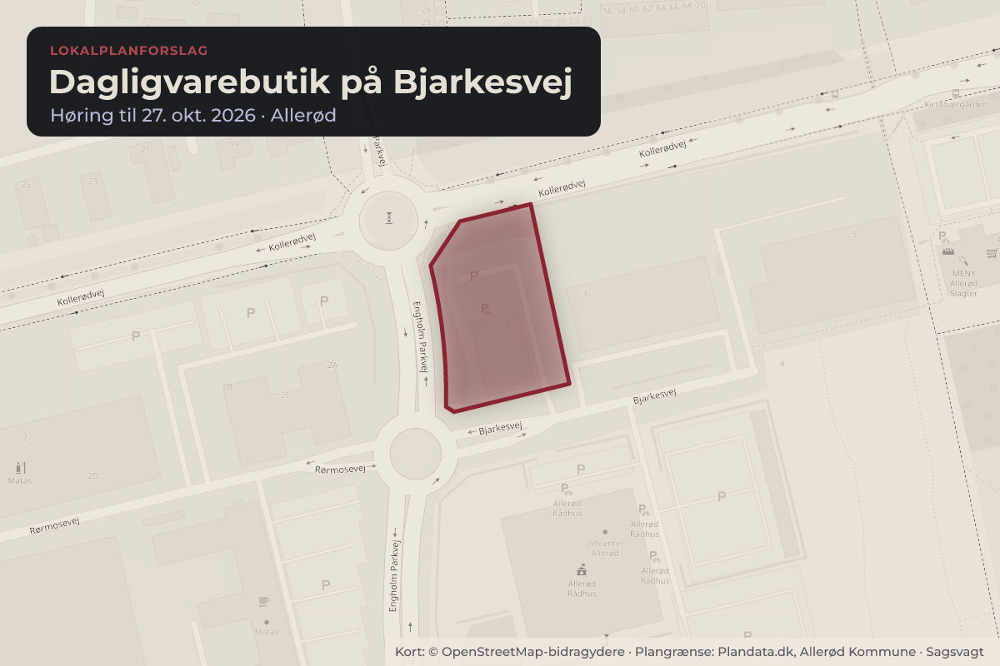
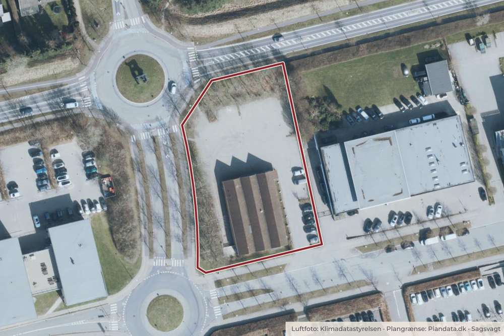

På dagsordenen 24. november, Miljø-, Erhvervs- og Byudvalget, Allerød
Endelig vedtagelse af lokalplan 2-323 for en dagligvarebutik ved Bjarkesvej

Kort: © OpenStreetMap-bidragydere. Plangrænse: Plandata.dk, Allerød Kommune.

Kort fortalt
- Hvem
- Miljø-, Erhvervs- og Byudvalget, Allerød Kommune
- Hvornår
- Tirsdag 24. november 2026
- Status
- På dagsordenen. Sagen behandles på mødet.
Er noget forkert her? Skriv til os
Hvad kan du gøre?
- Skriv til politikerne
- Udvalgets møder er lukkede, men du kan skrive til medlemmerne før mødet tirsdag 24. november 2026. Du finder dem på alleroed.dk.
Læs hele sagen Kommunens egen tekst
Sagsfremstilling
I forbindelse med den offentlige høring har Forvaltningen modtaget fire høringssvar, som
omhandler både lokalplanen og miljøscreeningen. Der er ikke modtaget høringssvar angående
kommuneplantillægget.
I høringsnotatet (bilag 3) er de indkomne bemærkninger resumeret og suppleret med
Forvaltningens kommenterer.
De samlede høringssvar i deres fulde længde er ligeledes vedlagt (bilag 4).
Høringssvarene vedrører følgende emner:
Trafikafvikling og trafiksikkerhed på det omkringliggende vejnet
Støjforhold i forbindelse med vareleverancer og butikkens drift
Lokalplanens adgangsforhold og disponering af området
Dagligvarebutikkens størrelse og indpasning i områdets detailhandelsstruktur
Bevaring af grønne beplantningsbælter og områdets visuelle karakter
Skiltning og reklamering inden for området
Der er på baggrund af høringssvarene foretaget en række mindre sproglige rettelser.
Forvaltningen vurderer, at ændringerne er af mindre karakter, der ikke har betydning for eller
ændrer på de forhold, som planen har til formål at muliggøre. På baggrund af dette, vurderes
det ikke nødvendigt at sende lokalplanen i fornyet høring.
Administrationens forslag
Forvaltningen foreslår, at udvalget indstiller til Økonomiudvalget og byrådet, at forslag til
lokalplan 2-323 samt kommuneplantillæg nr. 2 vedtages til offentliggørelse.
Dialog/høring
Lokalplanen har været i offentlig høring fra den 1. september 2026 til den 27. oktober 2026.
Der blev i høringsperioden afholdt et borgermøde.
Forvaltningen har modtaget fire høringssvar.
Forud for igangsættelsen af lokalplanarbejdet blev borgere fra nærområdet inviteret til et
indledende input- og procesmøde den 13. august 2025.
Der er ikke modtaget høringssvar til kommuneplantillæg nr. 2.
Kilde: Allerød Kommune, Miljø-, Erhvervs- og Byudvalget, dagsorden fra mødet tirsdag 24. november 2026, punkt 8. Læs den originale sag hos kommunen.